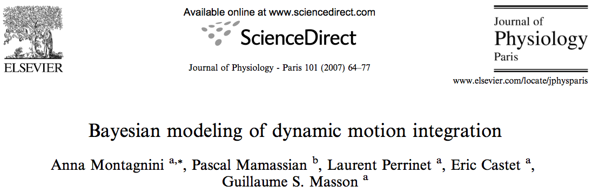

Abstract
The quality of the representation of an object's motion is limited by the noise in the sensory input as well as by an intrinsic ambiguity due to the spatial limi- tation of the visual motion analyzers (aperture prob- lem). Perceptual and oculomotor data demonstrate that motion processing of extended ob jects is initially dominated by the local 1D motion cues orthogonal to the ob ject's edges, whereas 2D information takes pro- gressively over and leads to the final correct represen- tation of global motion. A Bayesian framework ac- counting for the sensory noise and general expectancies for ob ject velocities has proven successful in explaining several experimental findings concerning early motion processing [1, 2, 3]. However, a complete functional model, encompassing the dynamical evolution of ob- ject motion perception is still lacking. Here we outline several experimental observations concerning human smooth pursuit of moving ob jects and more particu- larly the time course of its initiation phase. In addi- tion, we propose a recursive extension of the Bayesian model, motivated and constrained by our oculomotor data, to describe the dynamical integration of 1D and 2D motion information.
